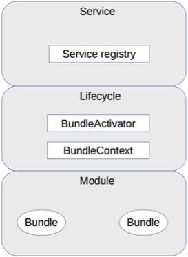

一、架构到底是指什么？
1.系统：指由一群有关联的个体组成，根据某种规则动作，能完成个别元件不能单独完成的工作的群体。它的意思是“总体”“整体”或“联盟”
2.关联：系统是由一群有关联的个体组成的，没有关联的个体堆在一起不能成为一个系统
3.规则：系统内的个体需要按照指定的规则动作，而不是单个个体各自为政。规则规定了系统内个体分工和协作的方式
3.能力：系统能力与个体能力有本质的差别，系统能力不是个体能力之和，而是产生了新的能力
4.子系统：也是由一群有关联的个体所组成的系统，多半会是更大系统中的一部分
5.模块和组件都是系统的组成部分，只是从不同的角度拆分系统而已：
- 从逻辑的角度来拆分系统后，得到的单元就是“模块”
- 从物理的角度来拆分系统后，得到的单元就是“组件”（零件）
4.框架关注的是“规范”，架构关注的是“结构”
5.软件架构指软件系统的顶层结构：
- “系统是一群关联个体组成”，这些“个体” 可以是“子系统”“模块”“组件”等；架构需要明确系统包含哪些“个体”
- 系统中的个体需要“根据某种规则”动作，架构需要明确个体动作和协作的规则
- 维基百科定义的架构用到了“基础架构”这个说法，改为“顶层结构”，可以更好地区分系统和子系统，避免将系统架构和子系统架构混淆在一起导致架构层次混乱
二、架构的历史背景
1.只有规模较大的软件系统才会面临软件架构相关问题：
- 系统规模庞大，内部耦合严重，开发效率低
- 系统耦合严重，牵一发动全身，后续修改和扩展困难
- 系统逻辑复杂，容易出问题，出问题后很难排查和修复
三、架构设计的目的
1.“架构设计的主要目的是为了解决软件系统复杂度带来的问题”：
- 心中有数，而不是一头雾水
- 有的放矢，而不是贪大求全
四、复杂度来源：高性能
1.单机复杂度：多线程、多进程，提供多任务并行处理
2.集群复杂度：任务分配、任务分解
3.简单的系统更加容易做到高性能
4.可以针对单个任务进行扩展
五、复杂度来源：高可用
1.高性能增加机器的目的在于“扩展”处理性能；高可用增加机器目的在于“冗余 ”处理单元
2.计算高可用：无论在哪台机器上进行计算，同样的算法和输入数据，产出的结果都是一致的
3.存储高可用：将数据从一台机器搬到另一台机器 ，需要经过线路进行传输。难点不在于如何备份数据，而在于如何减少或者规避数据不一致对业务造成的影响
4.高可用状态决策：无论是计算高可用还是存储高可用，其基础都是“状态决策”，即系统需要能够判断当前的状态是正常还是异常，如果出现了异常就要采取行动来保证高可用：
- 1）独裁式：不会出现决策混乱的问题，只有一个决策者，但当决策者本身故障时，整个系统就无法实现准确的状态决策，如果决策者本身又做一套状态决策，那就陷入一个递归的死循环了
- 2）协商式：协商式决策的架构不复杂，规则也不复杂，其难点在于，如果两者的信息交换出现问题（比如主备连接中断），此时状态决策应该怎么做
- 3）民主式：多数取胜，容易“脑裂”
六、复杂度来源：可扩展性
1.设计具备良好可扩展性的系统，有两个基本条件：正确预测变化、完美封装变化
2.预测变化的复杂性：
- 不能每个设计点都考虑可扩展性
- 不能完全不考虑可扩展性
- 所有的预测都存在出错的可能性
3.应对变化
- 1）将“变化”封装在一个“变化层”，将不变的部分封装在一个独立的“稳定层”（需要设计变化层和稳定层的接口）
- 2）提炼出一个“抽象层”和一个“实现层”。抽象层是稳定的，实现层可以根据具体业务需要定制开发（设计模式和规则引擎）
七、复杂度来源：低成本、安全、规模
1.低成本
- 1）低成本本质是与高性能和高可用冲突的，所以低成本很多时候不会是架构设计的首要目标，而是架构设计的附加约束
- 2）低成本给架构设计带来的主要复杂度体现在，往往只有“创新”才能达到低成本目标。这里的“创新”既包括开创一个全新的技术领域，也包括引入新技术，如果没有找到能够解决自己问题的新技术，那么就真的需要自己创造新技术了
- 3）引入新技术的主要复杂度在于需要去熟悉新技术，并且将新技术与已有技术结合起来；创造新技术的主要复杂度在于需要自己去创造全新的理念和技术，并且新技术跟旧技术相比，需要有质的飞跃
2.安全
- 1）功能安全：例如，常见的XSS攻击、CSRF攻击、SQL注入、WINDOWS漏洞、密码破解等，本质上是因为系统实现有漏洞，黑客有了可乘之机。黑客会利用各种漏洞潜入系统，这种行为就像小偷一样，黑客和小偷的手法都是利用系统或家中不完善的地方潜入，并进行破坏或盗取。因此形象地说，功能安全其实就是“防小偷”
- 2）架构安全：“防强盗”，主要依靠防火 墙
- 3）互联网系统的架构安全目前并没有太好的设计手段来实现，更多地是依靠运营商或者云服务商强大的带宽和流量清洗的能力，较少自己来设计和实现（DDOS等）
3.规模：主要原因就是“量变引起质变”
八、架构设计三原则
1.优秀程序员和架构师之间还有一个明显的鸿沟需要跨越，就是“不确定性”
2.合适原则：合适优于业界领先
- 没那么多人，却想干那么多活，是失败的第一个主要原因
- 没有那么多积累，却想一步登天，是失败的第二个主要原因
- 没有那么卓越的业务场景，却幻想灵光一闪成为天才，是失败的第三个主要原因
3.简单原则：简单优于复杂
- 1）结构复杂性：
- 组件越多，就越有可能其中某个组件出现故障
- 某个组件改动，会影响关联的所有组件
- 定位一个复杂系统中的问题总是比简单系统更加困难
- 2）逻辑的复杂性
- 单个组件承担了太多的功能
- 采用了复杂的算法
3.演化原则：演化优于一步到位
- 对于建筑来说，永恒是主题；对于软件来说，变化才是主题
- 软件架构设计其实更加类似于大自然“设计”一个生物，通过演化让生物适应环境，逐步变得更加强大
十、架构设计流程：识别复杂度
1.架构的复杂性主要来源于“高性能”“高可用”“可扩展”等几个方面，但架构师在具体判断复杂性的时候，不能生搬硬套，认为任何时候架构都必须同时满足这三方面的要求。实际上大部分场景下，复杂度只是其中的某一个，少数情况下包含其中两个，如果真的出现同时需要解决三个或者三个以上的复杂度，要么说明这个系统之前设计的有问题，要么可能就是架构师的判断出现了失误，即使真的认为要同时满足这三方面的要求，也必须要进行优先级排序
2.将主要的复杂度问题列出来，然后根据业务、技术、团队等综合情况进行排序，优先解决当前面临的最主要的复杂度问题
十一、架构设计流程：设计备选方案
1.新技术都是在现有技术的基础上发展出来的，现有技术又来源于先前的技术。将技术进行功能性分组，可以大大简化设计过程，这是技术“模块化”的首要原因。技术的“组合”和“递归”特征，将彻底改变我们对技术本质的认识
2.在种常见错误：
- 1）设计最优秀的方案
- 2）只做一个方案
- 3）备选方案过于详细
3.备选方案合理做法：
- 备选方案的数量以3-5个为最佳
- 备选方案的差异要比较明显
- 备选方案的技术不要只局限于已经熟悉的技术
十二、架构设计流程：评估和选择备选方案
1.几种指导思想：
- 最简派
- 最牛派
- 最熟派
- 领导派
2.360度环评
- 1）列出我们需要关注的质量属性点，然后分别从这些质量属性的维度去评估每个方案，再综合挑选适合当时情况的最优方案
- 2）常见的方案质量属性点有：性能、可用性、硬件成本、项目投入、复杂度、安全性、可扩展性等。在评估这些质量属性时，需要遵循架构 设计原则“合适原则”和“简单原则”，避免贪大求全，基本上某个质量属性能够满足一定时期内业务发展就可以了
- 3）通常情况下，如果某个质量属性评估和业务发展有关系（例如，性能、硬件成本等），需要评估未来业务发展的规模时，一种简单的方式是将当前的业务规模乘以2-4即可，如果现在的基数较低，可以乘以4，如果现在基数较高，可以乘以2
- 4）按优先级选择，即架构师综合当前的业务发展情况、团队人员规模和技能、业务发展预测等因素，将质量属性按照优先级排序，首先挑选满足第一优先级的，如果方案都满足，那就再看第二优先级……以此类推
十三、架构设计流程：详细方案设计
1.详细设计方案阶段可能遇到的一种极端情况就是在详细设计阶段发现备选方案不可行，一般情况下主要的原因是备选方案设计时遗漏了某个关键技术点或者关键的质量属性
2.避免遗漏：
- 1）架构师不但要进行备选方案设计和选型，还需要对备选方案的关键细节有较深入的理解
- 2）通过分步骤、分阶段、分系统等方式，尽量降低方案复杂度
- 3）如果方案本身就很复杂，那就采取设计团队的方式来进行设计，博采众长，汇集大家的智慧和经验，防止只有1-2个架构师可能出现的思维盲点或者经验盲区
十四、高性能数据库集群：读写分离
1.解决主从复制延迟几种常见方法：
- 1）写操作后的读操作指定发给数据库主服务器
- 2）读从机失败后再读一次主机
- 3）关键业务读写操作全部指向主机，非关键业务采用读写分离
2.数据库中间件的复杂度要比程序代码封装高出一个数量级，一般情况下建议采用程序语言封装的方式，或者使用成熟的开源数据库中间件
十五、高性能数据库集群：分库分表
1.业务分库：按照业务模块将数据分散到不同的数据库服务器（join问题、事务问题）
2.分表算法：
- 1）范围路由
- 2）Hash路由
- 3）配置路由：路由表，记录路由信息
3.分表需要考虑join、count、order by、group by，需要先从多个库表中查询 出来再重新操作，count可以使用记录数表，但增删时需要更新
十六、高性能NOSQL
1.NOSQL方案一般会牺牲ACID中的某个或者某几个特性，因此我们不能盲目地迷信NOSQL是银弹，而应该将NOSQL作为SQL的一个有力补充
2.NOSQL类型：
- 1）K-V存储：解决关系数据库无法存储数据结构的问题，以Redis为代表
- 不支持完整的ACID
- 2）文档数据库：解决关系数据库强schema约束的问题，以MongoDB为代表
- 新增字段简单、历史数据不会出错、容易存储复杂数据
- 不支持事务、JOIN操作
- 3）列式数据库：解决关系数据库大数据场景下的I/O问题，以HBase为代表
- 读取多个列时效率高、能够一次性完成对一行中的多个列的写操作
- 海量数据统计、高压缩存储比
- 4）全文搜索引擎：解决关系数据库的全文搜索性能问题，以Elasticsearch为代表
- 倒排索引（反向索引），建立单词到文档的索引
十七、高性能缓存架构
1.缓存就是为了弥补存储系统这些高并发场景下的不足，其基本原理是将可能重复使用的数据放到内存中，一次生成、多次使用，避免每次使用都是访问存储系统
2.缓存能够带来性能的大幅提升，以Memcache为例，单台Memcache服务器简单的key-value查询能够达到TPS50000以上
3.缓存穿透：指缓存没有发挥作用，业务系统虽然去缓存查询数据，但缓存中没有数据，业务系统需要再次去存储系统查询数据
- 1）数据不存在：如果查询存储系统的数据没找到，则直接设置一个默认值（可以是空值，也可以是具体的值）存到缓存中，这样第二次读取缓存时就会获取到默认值，而不会继续访问存储系统
- 2）缓存数据生成耗费大量时间或者资源：做好监控
- 3）缓存雪崩：指当缓存失效（过期）后引起系统性能急剧下降的情况。当缓存过期被清除后，业务系统需要重新生成缓存，因此需要再次访问存储系统，再次进行运算，这个处理步骤耗时几十毫秒甚至上百毫秒。而对于一个高并发的业务系统来说，几百毫秒内可能会接到几百上千个请求。所有请求都会去重新生成缓存，都去访问存储系统，从而对存储系统造成巨大压力，从而造成系统崩溃
- 更新锁：对缓存更新操作进行加锁保护，保证只有一个线程能够进行缓存更新，未能获取更新锁的线程要么等待锁释放后重新读取缓存，要么就返回空值或者默认值。分布式集群的业务系统需要用到分布式锁，如ZooKeeper
- 后台更新：由后台线程来更新缓存，而不是由业务线程来更新缓存，缓存本身的有效期设置为永久，后台线程定时更新缓存
- 缓存预热指系统上线后，将相关的缓存数据直接加载到缓存系统，而不是等待用户访问才触发缓存加载
- 4）缓存热点
- 缓存热点的解决方案就是复制多份缓存副本，将请求分散到多个缓存服务器上，减轻缓存热点导致的单台缓存服务器压力
- 缓存副本设计有一个细节需要注意，就是不同的缓存副本不要设置统一的过期时间，否则就会出现所有缓存副本同时生成同时失效的情况，从而引发缓存雪崩效应
4.扩展-双KEY策略：要缓存的key过期时间是t，key1没有过期时间，每次缓存读取不到key时就返回key1的内容，然后触发一个事件，这个事件同时更新key和key1
十八、单服务器高性能模式：PPC与TPC
1.高性能架构设计主要集中在两个方面：
- 尽量提升单服务器的性能，将单服务器的性能发挥到极致
- 如果单服务器无法支撑性能，设计服务器集群方案
2.PPC
- 1）PPC是指每次有新的连接就新建一个进程去专门处理这个连接的请求
- 2）弊端：
- fork代价高，进程创建的代价太高
- 父子进程通信复杂，需要采用IPC之类的进程通信方案
- 支持的并发数量有限，PPC方案能处理的并发连接数据最大也就几百
- 3）prefork
- 系统在启动的时候预先创造好进程
- 实现关键是多个子进程都accept同一个socket，当有新的连接进入时，操作系统保证只有一个进程能最后accept成功
- “惊群”现象，虽然只有一个子进程能accept成功，但所有阻塞在accept上的子进程都会被唤醒，Linux2.6版本后内核已经解决这个问题
3.TPC
- 1）TPC是指每次有新的连接就新建一个线程去专门处理这个连接的请求
- 2）问题：
- 高并发时还是有性能问题
- 无须进程间通信，但是进程间的互斥和共享又引入了复杂度，可能导致死锁
- 某个线程出现异常时，可能导致整个线程退出（如内存越界）
- 3）TPC本质上和PPC类似，在几百并发的场景下，反而会使用PPC，因为PPC方案不会有死锁的风险，也不会多进程互相影响，稳定性更高
- 4）prethread
- 预先创造线程
- Apache服务器会首先创建多个进程，每个进程里面再创建多个线程
十九、单服务器高性能模式：Reactor与Proactor
1.Reactor
- 1）PPC模式最主要的问题就是每个连接都要创建进程，连接结束后进程就销毁了，这样做其实是很大的浪费
- 2）引入资源池的处理方式后，会引出一个新的问题：进程如何才能高效地处理多个连接的业务？当一个连接一个进程时，进程可以采用“read->业务处理->write”的处理流程，如果当前连接没有数据可以读，则进程就阻塞在read操作上。解决这个问题最简单的方式是将read操作改为非阻塞，然后进程不断轮询多个连接。但会消耗CPU，效率比较低
- 3）I/O多路复用技术：
- 当多条连接共用一个阻塞对象后，进程只需要在一个阻塞对象上等待，而无须再轮询所有连接，常见实现方式有select、epoll、kqueue等
- 当某条连接有新的数据可以处理时，操作系统会通知进程，进程从阻塞状态返回，开始进行业务处理
- 4）Reactor，I/O多路复用结合线程池，“来了一个事件我就有相应的反应”，“我”就是Reactor，具体反应就是我们写的代码，也叫做Dispatcher模式，即I/O多路复用统一监听事件，收到事件后分配（Dispatch）给某个进程
- 5）三种典型实现方案：
- 单Reactor单进程/线程，适用于业务处理非常快的场景，如Redis
- 单Reactor多线程，利用多核CPU处理能力，但数据共享和访问比较复杂、Reactor承担所有事件的监听和响应
- 多Reactor多进程/线程，解决单Reactor多进程的问题，直接多Reactor，Nginx多Reactor多进程，Memache、Netty多Reactor多线程
- 6）Java语言一般使用线程（如Netty），C语言使用进程和线程都可以（如nginx使用进程、Memcache使用线程）
2.Proactor
- 1）Reactor非阻塞同步网络模型，真正的read和send操作都是同步的，而Proactor是异步的
- 2）可以理解为“来了事件我来处理，处理完了我再通知你”
- 3）windows下IOCP实现了真正的异步I/O，Linux下的AIO并不完善
二十、高性能负载均衡：分类及架构
1.高性能集群的复杂性主要体现在需要增加一个任务分配器，以及为任务选择一个合适的任务分配算法，对于任务分配器，现在更流行的通用叫法是“负载均衡器”
2.实际上任务分配并不只是考虑计算单元的负载均衡，不同的任务分配算法目标是不一样的有的基于负载考虑，有的基于性能（吞吐量、响应时间）考虑，有的基于业务考虑
3.负载均衡分类
- 1）DNS负载均衡
- a）DNS一般实现物理级别的均衡
- b）优点：
- 简单成本低
- 就近访问，提升访问速度
- c）缺点：
- 更新不及时
- 扩展性差：控制权在域名商
- 分配策略比较简单
- d）根据DNS负载均衡的一些缺点，对于时延和故障敏感的业务，有些公司实现了HTTP-DNS的功能，即使用HTTP协议实现一个私有的DNS系统
- 2）硬件负载均衡（F5、A10）
- a）优点：
- 功能强大
- 性能强大：软件10万级并发，硬件100万级以上
- 稳定性高：有厂商维护
- 支持安全防护：具备防火墙、防DDOS等
- b）缺点：
- 价格昂贵：普通的就是“马6”，好一点就是“Q7”
- 扩展能力差：硬件无法扩展和定制
- 3）软件负载均衡
- a）通过负载均衡软件来实现的负载均衡，常见的有Nginx和LVS，Nginx是软件的7层负载均衡，LVS是Linux内核的4层负载均衡。4层和7层的区别就在于协议和灵活性，Nginx支持HTTP、E-mail等协议，而LVS和协议无关，几乎所有应用都可以做，如聊天、数据库等
- b）软件和硬件的最主要区别就在于性能，Nginx负载均衡性能是万级，一般的Linux装一个Nginx大概能到5万/秒；LVS的性能是十万及，据说可达80万/秒；而F5是百万级，从200万/秒到800万/秒
- c）优点：
- 简单：部署还是维护都简单
- 便宜：Linux服务器装上软件
- 灵活：方便扩展，可选4层还是7层
- d）缺点：
- 性能一般
- 功能没有硬件负载均衡那么强大
- 一般不具备防火墙和防DDOS攻击等安全功能
4.组合负载均衡：DNS负载均衡用于实现地理级别的负载均衡；硬件负载均衡用于实现集群级别的负载均衡；软件负载均衡用于实现机器级别的负载均衡
二十一、高性能负载均衡：算法
1.轮询：按照顺序轮流分配到服务器上。只要服务器在运行，运行状态是不关注的，“简单”是轮询算法的优点，也是缺点
2.加权轮询：根据权重进行分配，一般是根据硬件配置进行静态配置的，动态计算复杂度会比较高。是为了解决不同服务器处理能力有差异的问题
3.负载最低优先：负载均衡系统将任务分配给当前负载最低的服务器（LVS连接数、Nginx请求数等）。解决了无法感知服务器状态的问题，但复杂度大幅上升，算法本身可能成为瓶颈
4.性能最优类：站在客户端的角度来分配，优先将任务分配给处理速度最快的服务器。通过响应时间来衡量服务器状态。复杂度同样很高
5.Hash类：根据任务中的某些关键信息进行Hash运算，将相同Hash值的请求分配到同一台服务器上，满足特定业务需求
- 源地址Hash：根据IP地址分配，适合于存在事务、会话的业务
- ID Hash：将某个标识ID的业务分配到同一个服务器中进行处理，一般是临时性的数据ID，如session_id
二十二、想成为架构师，你必须知道的CAP理论
1.Robert Greiner的CAP理论解释：
- 第一版：对于一个分布式计算系统，不可能同时满足一致性（Consistence）、可用性（Avaliability）、分区容错性（Partition）三个设计约束
- 第二版：在一个分布式系统中（指互相连接并共享数据的节点集合）中，当涉及读写操作时，只能保证一致性（Consistence）、可用性（Avaliability）、分区容错性（Partition）三者中的两个，另一个必须牺牲
2.CAP关注的是对数据的读写操作，而不是分布式系统的所有功能
3.一致性（Consistency）
- 第一版：所有节点在同一时刻都能看到相同的数据
- 第二版：对某个指定的客户端来说，读操作保证能够返回最新的写操作结果（在事务执行过程中，系统其实处于一个不一致的状态，不同的节点的数据并不完全一致）
4.可用性（Avaliability）
- 第一版：每个请求都能得到成功或者失败的响应
- 第二版：非故障的节点在合理的时间内返回合理的响应（不是错误和超时的响应，注意合理的）
5.分区容忍性（Partition Tolerance）
- 第一版：出现消息丢失或者分区错误时系统能够继续运行
- 第二版：当出现网络分区后，系统能够继续“履行职责”
二十三、想成为架构师，你必须掌握的CAP细节
1.CAP关注的粒度是数据，而不是整个系统，C与A之间的取舍可以在同一系统内以非常细小的粒度反复发生，而每一次的决策可能因为具体的操作，乃至因为牵涉到特定的数据或用户而有所不同
3.CAP是忽略网络延迟的。对于和金钱相关的，只能选择CA，单点写入，其他节点做备份
4.正常运行情况下，不存在CP和AP的选择，可以同时满足CA，既要考虑分区发生时选择CP还是AP，也要考虑分区没有发生如何保证CA
5.放弃不等于什么都不做，需要为分区恢复后做准备，分区期间记录日志，当分区故障解决后，系统根据日志进行数据恢复，使得重新达到CA状态
6.ACID，是数据库管理系统为了保证事务的正确性而提出来的一个理论
- Atomicity（原子性）一个事务的操作，要么全部完成，要么全部失败
- Consistency（一致性），在事务开始之前和事务结束以后，数据库的完整性没有被破坏
- Isolation（隔离性），允许多个并发事务同时对数据进行读写修改，包括未提交（Read uncommitted）、读提交（read committed）、可重复读（repeatable read）和串行化（Serializable）
- Durability（持久性），事务处理结合后，对数据的修改是永久的，即使系统故障也不会丢失
7.BASE，核心思想是即使无法做到强一致性（CAP的一致性就是强一致性），但应用可以采用适合的方式达到最终一致性
- 基本可用（Basically Available），分布式系统在出现故障时，允许损失部分可用性，即保证核心可用
- 软状态(Soft State），允许系统存在中间状态，而该中间状态不会影响系统的整体可用性
- 最终一致性（Eventual Consistency），系统中的所有数据副本经过一定时间后，最终能够达到一致的状态
8.ACID是数据库事务完整性的理论，CAP是分布式系统设计理论，BASE是CAP理论中AP方案的延伸
二十四、FMEA方法，排除架构可用性隐患的利器
1.FMEA（Failure mode and effects analysis，故障模式与影响分析）又称为失效模式与后果分析、失效模式与效应分析、故障模式与后果分析等
2.具体的分析方法是：
- 给出初始的架构设计图
- 假设架构中某个部件发生故障
- 分析此故障对系统功能造成的影响
- 根据分析结果，判断架构是否需要进行优化
3.FMEA分析表包含：
- 1）功能点，指的是从用户角度来看的，而不是从系统模块功能点划分来看的
- 2）故障模式，指系统会出现什么故障，包括故障点和故障形式，只需要假设出某种故障现象即可，描述要尽量精确 ，多使用量化描述
- 3）故障影响，当发生故障模式中描述的故障时，功能点具体会受到什么影响。常见的影响有：功能点偶尔不可用，功能点完全不可用、部分用户功能点不可用、功能点响应缓慢、功能点出错等
- 4）严重程度，指站在业务的角度故障的影响程度，一般分为“致命/高/中/低/无”五个档次，严重程度=功能点需要程度*故障影响范围*功能点受损程度
- 5）故障原因，不同的故障原因发生概率不同，不同的故障原因检测手段不一样，不同的故障原因的处理措施不一样
- 6）故障概率，指某个具体故障原因发生的概率，一般分类“高/中/低”三档即可
- 硬件，随着时间推移，故障率会越来越高
- 开源系统，成熟的开源系统BUG率低，自己已经有使用经验的开源系统BUG率低
- 自研系统，和开源系统类似
- 7）风险程度，就是综合严重程度和故障概率来一起判断某个故障的最终等级，风险程度=严重程度*故障概率
- 8）已有措施，针对具体的故障原因，系统现在是否提供了某些措施来应对
- 检测告警，检测故障然后告警，需要人工干预
- 容错，检测到故障后，系统能够通过备份手段应对，如mysql主机故障自动连接备机
- 自恢复，检测到故障后，系统能够自己恢复，一般是指“业务”上的恢复，不太可能将真正的故障恢复
- 9）规避措施，为了降低故障发生概率而做的一些事情，可以是技术手段，也可以是管理手段
- 技术手段，为了避免MonogoDB数据丢失而使用MySQL冗余一份
- 管理手段，为了降低磁盘坏道的概率，强制统一更换服务时间超过2年的磁盘
- 10）解决措施，为了能够解决问题而做的一些事情 ，一般都是技术手段。一般来说，如果某个故障既可以采取规避措施，又可以采取解决措施，那么我们会优先选择解决措施，毕竟能解决问题当然是最好的
- 11）后续规划，综合前面的分析，就可以看出哪些故障我们目前还缺乏对应的措施，哪些已有措施还不够，针对这些不足的地方，再结合风险程度进行排序，给出后续的改进规划。这些规划既可以是技术手段，也可以是管理手段；可以是规避措施，也可以是解决措施。同时需要考虑资源的投入情况，优先将风险程度高的系统隐患解决
二十五、高可用存储架构：双机架构
1.常见的双机高可用架构：
- 1）主备复制，备机主要还是起到一个备份作用，并不承担实际的业务读写操作，如果需要更改为主机，需要人工操作
- 2）主从复制，从机负责读操作，写少读多的业务适合，如论坛、新闻站
- 3）双机切换，为了解决主机故障和需要人工恢复的问题，包括主备切换和主从切换两种方案。简单来说，这两个方案就是在原有方案的基础上增加“切换”功能，即系统自动决定主机角色，并完成角色切换
- a）主备间状态判断：
- 状态传递的渠道：是相互间互相连接，还是第三方仲裁？
- 状态检测的内容：例如机器是否掉电、进程是否存在、响应是否缓慢等
- b）切换决策
- 切换时机：什么情况下备机升级？
- 切换策略：原来的主机故障恢复后，要再次切换，确保原来的主机继续做主机，还是原来的主机恢复后成为新的备机？
- 自动程度：切换完全是自动的，还是半自动的？
- c）数据冲突解决：当原有故障的主机恢复后，新旧主机之间可能存在数据冲突
- 4）互连式，指主备机直接建立状态传递的渠道
- a）在主备复制的架构基础上，主机和备机多了一个“状态传递”的通道，这个通道就是用来传递状态信息的
- 可以是网络连接（各开一个端口），也可以是非网络连接（用串口连接）
- 可以是主机发送状态给备机，也可以是备机到主机来获取状态信息
- 可以和数据复制通道共用，也可以独立一条通道
- 状态传递通道可以是一条，也可以是多条，还可以是不同类型的通道混合
- b）为了充分利用切换方案能够自动决定主机这个优势，客户端也会有一些相应的改变，常见的方式有：
- 为了切换后不影响客户端的访问，主机和备机之间共享一个对客户端来说唯一的地址。例如虚拟IP，主机需要绑定这个虚拟IP
- 客户端同时记录主备机的地址，哪个能访问就访问哪个；备机虽然能收到客户端的操作请求，但是会直接拒绝，拒绝的原因就是“备机不对外提供服务”
- c）互连式的主要缺点：
- 如果状态传递的通道本身有故障，那么备机也会认为主机故障了从而升级，最终可能出现两个主机
- 虽然可以通过增加多个通道来增强状态传递的可靠性，但这样做只是降低了通道故障概率而已，不能从根本上解决这个缺点，而且通道越多，后续的状态决策会更加复杂
- 5）中介式，指的是在主备两者之外引入第三方中介，主备机之间不直接连接，并通过中介来传递状态信息
- 连接管理更简单，只要连接到中介即可，了解你的主备机的连接管理复杂度
- 状态决策更简单，主备机的决策简单了，无须考虑多种类型的连接通道获取的状态信息如何决策的问题，只需要按照算法完成状态决策
- 关键代价就在于如何实现中介本身的高可用
- ZooKeeper本身已经实现了高可用集群架构，因此已经帮我们解决了中介本身的可靠性问题，在工程实践中推荐基于ZooKeeper搭建中介式切换架构
- 6）模拟式，主备机之间并不传递任何状态数据，而是备机模拟成一个客户端，向主机发起模拟的读写操作，根据读写操作的响应情况来判断主机的状态
- 7）主主复制，两台机器都是主机，互相将数据复制给对方
- a）独特的复杂性，如果采取主主复制架构，必须保证数据能够双向复制，而很多数据是不能双向复制的
- b）必须对数据的设计有严格的要求，一般适合于那些临时性、可丢失、可覆盖的数据场景
二十六、高可用存储架构：集群和分区
1.简单来说，集群就是多台机器组合在一起形成一个统一的系统，这里的“多台”，数量上至少是3台；相比而言，主备、主从都是2台机器。根据集群中机器承担的不同角色来划分，集群可以分为两类：数据集中集群、数据分散集群
- 1）数据集中集群
- 类似于主从架构
- 主从架构只有一条复制通道，数据集中集群架构中，存在多条复制通道，会增加主机复制压力，可能会导致多个备机之间数据不一致
- 多台备机都需要对主机状态进行判断，而不同的备机判断的结果可能是不同的
- 主机故障后，如何决定新的主机
- 2）数据分散集群
- 指多个服务器组成一个集群，每台服务器都会负责存储一部分数据，每台服务器也会备份一部分数据
- 需要考虑：均衡性、容错性、可伸缩性
- 每台服务器都可以处理读写请求，不存在数据集中集群中必须有一个角色来负责写的主机
- 但需要一个角色来负责执行数据分配算法，可以是一台服务器，也可以是集群自己选举出来的服务器（Hadoop的NameNode）
- 3）一般来说，数据集中集群适合数据量不大，集群机器数量不多的场景。例如，ZooKeeper集群，一般推荐5-6台机器左右，数据量是单台服务器就能够支撑；而数据分散集群，由于良好的可伸缩性，适合业务数据量巨大、集群机器数量庞大的业务场景。例如，Hadoop集群、HBase集群，大规模的集群可以达到上百台甚至上千台服务器
2.数据分区，是指将数据按照一定的规则进行分区，不同分区分布在不同的地理位置上，每个分区存储一部分数据，通过这种方式来规避地理级别的故障所造成的巨大影响
- 1）数据量，越大分区规则越复杂，如何定位故障机器，如何配置，地理集中
- 2）分区规则，洲际、国家、城市
- 3）复制规则：
- 集中式（一个总的备份中心，设计简单，扩展容易 ，成本较高）
- 互备式（每个分区备份另外一个分区的数据，设计比较复杂，扩展麻烦，成本低）
- 独立式（每个分区自己有独立的备份中心，备份中心应该不和数据中心在一个地方，隔壁市比较好，扩展容易，成本高）
二十七、如何设计计算高可用架构？
1.计算高可用的主要设计目标是当出现部分硬件损坏时，计算任务能够继续正常运行。因此计算高可用的本质是通过冗余来规避部分故障的风险，单台服务器是无论如何都达不到这个目标的。所以计算高可用的设计思想很简单：通过增加更多服务器来达到计算高可用
2.计算高可用架构的设计复杂度主要体现在任务管理方面，既当任务在某台服务器上执行失败后，如何将任务重新分配到新的服务器进行执行
- 1）哪些服务器可以执行任务
- 和计算高性能中的集群类似，每个服务器都可以执行任务
- 和存储高可用中的集群类似，只有特定服务器可以执行任务，当故障后需要选新的服务器来执行任务
- 2）任务如何重新执行
- 对于已经分配的任务即使执行失败也不做任何处理，系统只需要保证新的任务能够分配到其他非故障服务器上执行即可
- 设计一个任务管理器来管理需要执行的计算任务，服务器执行完任务后，需要向任务管理器反馈任务执行结果，任务管理器根据任务执行结果来决定是否需要将任务重新分配到另外的服务器上执行
- 3）“任务分配器”是一个逻辑的概念，并不一定要求系统存在一个独立的任务分配器模块
3.主备
- 1）和存储高可用的类似，但是要更简单一些，因为无须数据复制
- 2）冷备：备机没有启动，需要人工手动启动并将任务分配器的请求切换到备机
- 3）温备：备机上的服务已经启动，人工只需要转发请求
- 4）适合内部管理系统、后台管理系统这种使用人数不多、使用频率不高的业务，不适合大型在线业务
4.主从
- 1）和存储高可用的主从类似。任务分配器需要将任务进行分类，确定哪些任务可以发送给主机执行，哪些任务可以发送给备机执行
- 2）发挥从机性能，需要将任务分类，任务分配器会复杂些
5.集群
- 1）对称集群（负载均衡集群）
- 负载均衡器的设计关键点在于：选取的分配策略、需要检测服务器状态
- 不同业务场景的状态判断条件差异很大，实际设计时要根据业务需求来进行设计和调优
- 2）非对称集群
- Master和Slave承担不同的职责，部分任务是Master才能执行，部分任务是Slave服务器才能执行
- 相比对称集群：任务分配策略更加复杂；角色分配策略实现比较复杂（可能需要ZAB、Raft这类复杂算法实现Leader选举）
如何高效学习开源项目
1.开源项目对团队和业务有很大好处，但对于技术人员来说，如果只是简单的采取“拿来主义”，那就是变成一个陷阱：看似很快的用开源项目实现了需求，但自己的技术水平并没有提升；甚至可能出现看起来用了很多开源项目，知道很多项目名称，但技术水平止步不前的窘境
2.学习开源项目的看法：
- 1）不管你是什么身份，都可以从开源项目中学到很多东西
- 2）不要只盯着数据结构和算法
- 3）采用“自顶向下”，源码不是第一步，而是最后一步
3.学习方法和步骤
- 1）安装
- 了解依赖组件
- 目录信息
- 提供了哪些工具
- 2）运行
- 命令行和配置文件
- 3）原理研究
- 关键特性的实现原理
- 优缺点对比分析（将两个类似的项目对比）
- 通读设计文档
- 阅读网上已有的分析文档
- Demo验证
- 4）测试
- 要在原理研究之后做，不能安装完成立马就测试
- 5）源码研究
- 不建议通读所有源码，想掌握每一行代码的含义还是比较耗费时间的。带着明确的目的去研究源码 ，做到有的放矢，才能事半功倍
- Redis的RDB快照、Nginx的多Reactor模型、Disruptor如何使用volatile以及CAS来做无锁设计、Netty的Zero-Copy等
- 对于一些基础库，还可以自己写个Demo调用基础库完成一些简单的功能，通过调用栈来理解基础库的逻辑和过程
4.时间分配：以上前3步必须做，第4步在准备采用开源库时必须做，第5步可以根据时间来进行灵活安排，有一定精力的时候做
二十八、业务高可用的保障：异地多活架构
1.异地多活的关键点就是异地、多活，其中异地就是指地理位置上不同的地方，类似于“不要把鸡蛋都放在同一个篮子里”；多活就是指不同地理位置上的系统都能够提供业务服务，这里的“活”是活动、活跃的意思
2.异地多活的代价很高：
- 系统复杂度会发生质的变化 ，需要设计复杂的异地多活架构
- 成本会上升，毕竟要多在一个或者多个机房搭建独立的一套业务系统
- 如果业务规模很大，能够做异地多活的情况下还是尽量。这样能够在异常的场景下给用户提供更好的体验，也能减少异常场景带来的收入损失
3.架构模式
- 1）同城异区：速度快、复杂度低，应对机房级别故障
- 2）跨城异地：距离远，应对极端灾害，复杂度大大增加，中间传输有不可控因素，网络波动（如果是强一致性要求的数据，例如银行存款余额、支付宝余额等，这类数据实际上是无法做到跨城异地多活的），对数据一致性要求不高、不怎么改变、或者不怕丢失的业务很有用
- 3）跨国异地：主要为不同地区用户提供服务（两套系统）；只读类业务做多活；
二十九、异地多活设计4大技巧
1.保证核心业务的异地多活
2.保证核心数据最终一致性
- 尽量减少异地多活机房的距离，搭建高速网络
- 尽量减少数据同步，只同步核心业务相关的数据
- 保证最终一致性，不保证实时一致性
3.采用多种手段同步数据，例如数据库、Redis本身的同步机制之外：
- 消息队列方式
- 二次读取方式（再去A中心读取一次）
- 存储系统同步方式
- 回源读取方式
- 重新生成数据方式
4.只保证绝大部分用户的异地多活
- 挂公告：说明问题原因
- 事后对用户进行补偿
- 补充体验
6.核心思想：采用多手段，保证绝大部分用户的核心业务异地多活
三十、异地多活设计4步走
1.业务分级
- 1）按照一定的标准将业务进行分组，挑选出核心的业务，只为核心业务设计异地多活，降低方案整体复杂度和实现成本
- 2）常见的有：访问量大的业务、核心业务、产生大量收入的业务
2.数据分类
- 1）选择出核心业务后，需要对核心业务相关的数据进一步分析，目的在于识别所有的数据及数据特征，这些数据特征会影响后面的方案设计
- 2）常见的数据特征分析维度有：数据量、唯一性、实时性、可丢失性、可恢复性
3.数据同步
- 1）确定数据的特点后，可以根据不同的数据设计不同的同步方案
- 2）常见的数据同步方案：存储系统同步、消息队列同步、重复生成（cookie、session等）
4.异常处理
- 1）无论数据同步方案如何设计，一旦出现极端异常情况，总是会有部分数据出现异常的。例如，同步延迟、数据丢失、数据不一致等。异常处理就是假设在出现 这些问题时，系统将采取什么措施来应对
- 2）常见的异常处理措施：
- 多通道同步：一般两通道即可，数据库和消息队列同步不能采用相同的网络连接（一公网一内网），需要数据是可以重复覆盖的（无论哪个通道先到，最终结果是一样的）
- 同步和访问结合：异地机房通过系统的接口来进行数据访问：接口访问通道和数据库同步通道不能采用相同的网络连接；数据有路由规则，可以根据数据来推断应该访问哪个机房的接口；优先读取本地数据，无法读取再去接口访问
- 日志记录：主要用于用户故障恢复后对数据进行恢复，日志保存到独立的地方，拿出日志对比后进行修复；服务器上保存日志，数据库中保存数据；本地独立系统保存日志；日志异地保存
- 用户补偿：送用户代金券、礼包、礼品、红包等
三十一、如何应对接口级的故障
1.接口级故障的典型表现就是系统并没有宕机，网络也没有中断，但业务却出现问题了
2.主要原因：
- 1）内部原因：BUG、慢查询、逻辑不完善等
- 2）外部原因：黑客攻击、促销抢购大流量、大量请求、第三方响应慢等
3.解决接口级故障的核心思想（与异地多活类似，优先保证核心业务和优先保证绝大部分用户）
4.降级
- 1）指系统将某些业务或者接口的功能降低，可以是只提供部分功能，也可以是完全停掉所有功能。如论坛只能看不能发，停掉App日志等
- 2）降级的核心思想就是丢车保帅，优先保证核心业务
- 3）常见的降级方式有：
- 系统后门降级：简单，但需要一台一台服务器操作，效率低
- 独立降级系统：独立到一个单独的系统中，可以实现权限管理、指操作等功能
5.熔断
- 1）熔断的目的是应对依赖的外部系统故障的情况，如果外部接口请求异常直接返回错误。关键是需要有一个统一的API调用层，由API调用层来进行采样或者统计，如果接口调用散落在代码各处就没法进行统一处理了。另外一个关键是阈值的设计。
6.限流
- 1）降级是从系统功能优先级的角度考虑如何应对故障，而限流则是从用户访问压力的角度来考虑如何应对故障。限流指只允许系统能够承受的访问量进来，超出系统访问能力的请求将被丢弃
- 2）虽然“丢弃”这个词听起来让人不太舒服，但保证一部分请求能够正常响应，总比全部请求都不能响应要好得多
- 3）可以分为：
- 基于请求限流：从外部请求访问的请求角度考虑限流；限制总量，某个指标的累积上限；限制时间，一段时间内某个指标的上限；应用于负载均衡、网关、抢购等
- 基于资源限流：从系统内部考虑，找到系统内部影响性能的关键点，对其使用上限进行限制，如连接数、文件句柄、线程数、请求队列等；反映当前系统压力；
7.排队
- 1）是限流的一个变种，限流是拒绝用户，排队是让用户等待一段时间；使用Kafka之类的消息队列来缓存用户请求；排队模块、调度模块、服务模块
三十二、可扩展架构的基本思想和模式
1.可扩展的基本思想：一个字，拆，就是将原本大一统的系统拆分成多个规模小的部分，扩展时只修改其中其中一部分即可，无须整个系统到处都改，通过这种方式来减少改动范围，降低改动风险
2.常见的拆分思路
- 面向流程拆分，将整个业务流程拆分为几个阶段
- 面向服务拆分，将系统提供的服务拆分
- 面向功能拆分，将系统提供的功能拆分
3.面向流程拆分：展示层->业务层->数据层->存储层
- 展示层：负责用户页面设计，不同业务有不同的页面
- 业务层：负责具体业务逻辑的处理
- 数据层：负责完成数据访问
- 存储层：负责数据的存储
4.面向服务拆分：注册、登录、安全等
5.面向功能拆分：每个维度更细粒度的功能
6.不同的拆分方式，本质上决定了系统的扩展方式
7.合理的拆分，能够强制保证即使程序员出错，出错的范围也不会太广，影响也不会太大
8.不同的拆分方式，将得到不同的系统架构，典型的可扩展系统架构有（不是非此即彼的，可以在系统架构设计中进行组合使用）：
- 面向流程拆分：分层架构
- 面向服务拆分：SOA、微服务
- 面向功能拆分：微内核架构
三十三、传统的可扩展架构模式：分层架构和SOA
1.分层架构
- 1）C/S架构、B/S架构：划分的对象是整个系统，划分的维度是用户交互，即将和用户交互的部分独立为一层，支撑用户交互的后台作为另外一层
- 2）MVC架构、MVP架构：划分的对象是单个业务子系统，划分的维度是职责，将不同的职责划分到独立层，但各层的依赖关系比较灵活
- 3）逻辑分层架构：划分的对象可以是单个业务子系统，也可以是整个业务系统，划分的维度也是职责，逻辑分层架构中的层是自顶向下依赖的，如操作系统的内核架构、TCP/IP架构、J2EE系统架构等
- 4）核心点是需要保证各层之间的差异足够清晰，边界足够明显，让人看到架构图后就能看懂整个架构
- 5）本质在于隔离关注点（separation of concerns），即每个层中的组件只会处理本层的逻辑
- 6）分层时要保证层与层之间的依赖是稳定的，才能真正支撑快速扩展
- 7）对于操作系统这类复杂的系统，接口本身也可以成为独立的一层
- 8）分层结构是层层传递的，整个业务流程是按照层进行依次传递的，不能在层之间进行跳跃
- 好处在于将分层依赖限定为两两依赖
- 缺点在于冗余，不管业务多简单，每层都必须参与处理，甚至可能每层都写了一个简单的包装函数，另外还有性能的浪费
2.SOA
- 1）出现的背景是企业内部的IT系统重复建设效率低下
- 2）3个关键概念
- 服务：所有业务功能都是一项服务，对外开放，当其他系统需要使用时无须定制化开发。可大可小，可简单也可复杂
- ESB，企业服务总线，将企业中各个不同的服务连接在一起，使用ESB来屏蔽异构系统对外提供各种不同的接口方式，以此来达到服务间高效的互联互通
- 松耦合：减少各个服务间的依赖和互相影响。要做到向后兼容是一项复杂的任务
- 3）解决了传统IT系统重复建设和扩展效率低的问题，但其本身也引入了更多的复杂性。ESB承载的消息太多时，本身也会成为整体系统的性能瓶颈
三十四、深入理解微服务架构：银弹OR焦油坑？
1.微服务与SOA的关系
- 1）服务粒度：SOA更粗一些
- 2）服务通信：SOA采取ESB作为服务间通信和关键组件，负责服务定义、服务路由、消息转换、消息传递，是重量级的实现。微服务推荐使用统一的协议和格式，如RESTful、RPC协议，“聪明的终端，愚蠢的管道”
- 3）服务交付：SOA对服务的交付没有特殊要求，考虑的是兼容已有的系统；微服务要求“快速交付”，相应地要求采取自动化测试、持续集成、自动化部署等敏捷相关实践
- 4）应用场景：SOA更适合于庞大、复杂、异构的企业级系统；微服务更加适合于快速、轻量级、基于Web的互联网系统
- 5）SOA和微服务本质上是两种不同的架构设计理念，只是在“服务”这个点上有交集而已
2.微服务概念的三个重要关键词：small、lightweight、automated
3.微服务的陷阱
- 1）服务划分过细，服务间关系复杂：单个服务的复杂度确实下降了，但整个系统的复杂度却上升了，将系统内复杂度转成系统间复杂度了
- 2）服务数量太多，团队效率急剧下降：无论是设计、测试、开发、部署，都需要工程师不停地在不同的服务间切换
- 3）调用链太长，性能下降：为了支撑业务请求，需要大幅增加硬件，也带来硬件成本的上升
- 4）调用链太长，问题定位困难
- 5）没有自动化支撑，无法快速交付：每次需要测试大量接口、部署麻烦、监控定位
- 6）没有服务治理，微服务数量多了后管理混乱：服务路由、服务故障隔离、服务注册和发现
三十五、微服务架构最佳实践—方法篇
1.服务粒度
- 1）“三个火枪手”原则：即一个微服务三个人负责开发。当我们在实施微服务架构时，根据团队规模来划分微服务数量，如果业务规模继续发展，团队规模扩大，我们再将已有的微服务进行拆分
- 2）“三个火枪手”原则适用于微服务设计和开发阶段，如果已经比较稳定无须太多开发，平均1个人维护1个微服务甚至几个都行，但最好安排2个人维护考虑备份问题
2.拆分方法
- 1）基于业务逻辑划分：将系统中的业务模块按照职责范围识别出来，每个单独的业务模块拆分为一个独立的服务
- 可能出现团队成员对于“职责范围”的理解差异很大的问题
- 可以根据“三个火枪手”原则划分服务数量范围
- 2）基于可扩展拆分：将系统中业务模块按照稳定性排序，将已经成熟和改动不大的服务拆分为稳定服务，将经常变化和迭代的服务拆分为变动服务
- 稳定服务可以粗一些，不稳定服务可以细一些
- 提升项目快速迭代的效率
- 3）基于可靠性拆分：将系统中的业务模块按照优先级排序 ，将可选性要求高的核心服务和可靠性要求低的非核心服务拆分开来，然后重点保证核心服务的高可用
- 避免非核心服务故障影响核心服务
- 核心服务高可用方案可以更简单
- 能够降低高可用成本
- 4）基于性能拆分：将性能要求高或者性能压力大的模块拆分出来，避免性能压力大的服务影响其他服务
3.基础设施
- 1）大部分人主要关注的是微服务的“small”和”lightweight”，但实际上真正决定微服务成败的，恰恰是那个被大部分人都忽略的“automated”。因为服务粒度即使划分不合理，实际落地后如果团队遇到麻烦，自然会想到拆分服务或者合并服务；如果“automated”相关的基础设施不健全，那微服务就 是焦油坑，让研发、测试、运维陷入各种陷阱中
- 2）按下列优先级来搭建基础设施：
- a）服务发现、服务路由、服务容错：这是最基本的微服务基础设施
- b）接口框架、API网关：主要是为了提升开发效率
- c）自动化部署、自动化测试、配置中心：提升测试和运维效率
- d）服务监控、服务跟踪、服务安全：进一步提升运维效率
- 3）以上c和d两类基础设施，其重要性会随着微服务节点数量增加而越来越重要，但在微服务节点数量较少的时候，可以通过人工的方式支撑，虽然效率不高，但也是基本能够顶住
三十六、微服务架构最佳实践—基础设施篇
1.自动化测试：范围包括代码级的单元测试、单个系统级别的集成测试、系统间的接口测试，理想情况是每类测试都自动化，至少要做到接口测试自动化
2.自动化部署：自动化部署系统包括版本管理、资源管理（如机器管理、虚拟机管理）、部署操作、回退操作等
3.配置中心：包括配置版本管理（如同样的微服务，有10个节点是给移动用户服务的，有20个节点给联通用户服务的，配置项都一样，配置值不一样）、增删改查配置、节点管理、配置同步、配置推送等
4.接口框架：通信方式一般采用HTTP/REST或者RPC方式统一接口协议。但在实践过程中，光统一接口协议还不够，还需要统一接口传递的数据格式。如JSON及JSON规范
5.API网关：
- 如果外部系统想要调用系统的某个功能，不需要也去理解这么多微服务的职责分工和边界，只会关注它需要的能力，而不会关注这个能力应该由哪个微服务提供
- API网关是外部系统访问的接口，所有的外部系统接入系统都需要通过API网关，主要包括接入鉴权（是否允许接入）、权限控制（可以访问哪些功能）、传输加密、请求路由、流量控制等功能
6.服务发现：节点的变化能够及时同步到所有其他依赖的微服务
- 1）自理式：一般通过统一的程序库或者程序包提供给各个微服务调用，而不会每个微服务访谈软件包自己来重复实现一遍；访问压力分散到了各个微服务节点，性能和可用性上不存在明显的压力和风险
- 2）代理式：有一个负载均衡系统来完成微服务之间的服务发现；负载均衡系统故障、性能问题是主要风险；可以设计成集群模式，但又增加了复杂性；
- 3）不管是代理式还是自理式，核心就是服务注册表，注册表记录了所有服务节点的配置和状态，每个微服务都将自己的信息注册到服务注册表，然后由微服务或者LOAD BALANCER系统到服务注册表查询可用服务
7.服务路由：需要从所有符合条件的可用微服务节点中挑选出一个具体的节点发起请求；和服务发现紧密相关；常见路由算法有：随机路由、轮询路由、最小压力路由、最小连接数路由等
8.服务容错：包括请求重试、流控和服务隔离。通常情况下，服务容错会集成在服务发现和服务路由系统中
9.服务监控：实时搜集信息并进行分析，避免故障后分析，减少处理时间；服务监控可以在实时分析的基础上进行预警，在问题萌芽阶段发觉并预警，降低了问题影响的范围和时间；建议做成独立系统，不要集成到服务发现、API网关等系统中
10.服务跟踪：与服务监控的区别在于更微观
11.服务安全：插入安全、数据安全、传输安全
三十七、微内核架构详解
1.微内核架构（Microkernel Architecture），也被称为插件化架构（Plug-in Architectrue），是一种面向功能进行拆分的可扩展性架构，通常用于实现基于产品（原文为product-based，指存在多个版本、需要下载安装才能使用，与web-based相对应）的应用。例如Eclipse这类IDE软件、UNIX这类操作系统、淘宝APP这类客户端软件等，也有一些企业将自己的业务系统设计成微内核的架构，例如保险公司的保险核算逻辑系统，不同的保险品种可以将逻辑封装成插件
2.基本架构
- 1）微内核架构包含两类组件：核心系统（core system）和插件模块（plug-in modules）。核心系统负责和具体业务功能无关的通用功能，例如模块架构、模块间通信等；插件模块负责实现具体的业务逻辑
3.设计关键点
- 1）插件管理：插件注册表，可以是配置文件，也可以是代码，还可以是数据库，包括模块信息，名字、位置、加载时机（启动加载还是按需加载）等
- 2）插件连接：OSGi（Eclipse使用）、消息模式、依赖注入（Spring使用），甚至分布式协议都可以，比如RPC或者HTTP Web
- 3）插件通信：类似于主板上的总线，由核心系统提供
4.OSGi架构简析：是一个插件化的标准，而不是一个可运行的框架

- 1）模块层（Module）：插件管理
- 2）生命周期层（Lifecycle）：实现插件连接，提供了执行时模块管理、模块对底层OSGi框架的访问，精确定义模块的操作（安装、更新、启动、停止、卸载）
- 3）服务层（Service）：实现插件通信功能，将自己提供的服务注册到核心的服务注册中心
5.规则引擎架构解析
- 1）规则引擎从结构上来看也属于微内核架构的一种具体实现，其中执行引擎可以看作是微内核，执行引擎解析配置好的业务流，执行其中的条件和规则，通过这种方式来支持业务的灵活多变
- 2）规划引擎在计划、保险、促销等业务领域应用较多，如电商促销
- 3）特点：可扩展、易理解、高效率

- 4）插件管理：规则一般保存在数据库中
- 5）插件连接：就是规则语言，业务人员需要基于规则语言来编写规则文件，然后由规则引擎加载执行规划文件来完成业务功能
- 6）插件通信：通过数据流和事件流，规则只需要输出数据或者事件，由引擎将数据或者事件传递到下一个规则
- 7）开源工具：JBoss Drools
三十八、架构师应该如何判断技术演进的方向？
1.技术演进的动力
- 1）不管是潮流、保守、跟风，都是站在技术本身的角度来考虑问题的，只有跳出技术的范畴，从一个更广更高的角度来考虑，这个角度就是企业的业务发展
- 2）影响一个企业业务的发展主要有3个因素：市场、技术、管理，构成支撑业务发展的铁三角
- 3）业务处于铁三角的中心，市场、技术、管理都是为了支撑企业业务的发展
- 4）对于产品类业务：技术创新推动业务发展
- 5）对于“服务类”业务：业务发展推动技术的发展
- 6）当“规模”成为业务的决定因素后，服务模式的创新就成为了业务发展的核心驱动力，而产品只是为了完成服务而提供给用户使用的一个载体
- 7）服务类业务发展路径：提出一种创新的服务模式->吸引了一批用户->业务开始发展->吸引了更多用户->服务模式不断完善创新->吸引越来越多的用户（循环）
- 8）除非是开创新的技术能够推动一种或者创造一种新的业务，否则都是业务的发展推动了技术的发展
2.技术演进的模式
- 1）判断业务当前和接下来一段时间的主要复杂度是什么非常关键，答案是基于业务发展阶段进行判断
三十九、互联网技术演进的模式
1.业务复杂性
- 1）初创期：要求快，能买就买，能用开源的就用开源的
- 2）发展期：将原来不完善的业务逐渐完善，快速实现需求
- 堆功能期：在原有系统里面不断地增加新的功能
- 优化期：优化派，将现有系统优化
- 架构派，调整系统架构，拆分大系统为小系统（折功能、拆数据库、拆服务器）
- 保证竞争力是最主要的问题
- 3）竞争期
- a）平台化
- 目的在于解决“重复造轮子”的问题
- 存储平台化：淘宝的TFS、京东JFS
- 数据库平台化：百度的DBProxy、淘宝TDDL
- 缓存平台化：Twitter和Twemproxy、豆瓣的BeansDB、腾讯TTC
- b）服务化
- 目的在于解决“系统交互”的问题，常见的做法是通过消息队列来完成系统间的异步通知，通过服务框架来完成系统间的同步调用
- 消息队列：淘宝的Notify、MetaQ，开源的Kafka、ActiveMQ等
- 服务框架：Facebook的thrift、当当网的Dubbox、淘宝的HSF等
- 4）成熟期：业务求“精”，系统优化
2.用户规模
- 1）性能：集中存储变为分布式存储
- 2）可用性
3.量变到质变

四十、互联网架构模板：“存储层”技术
1.互联网技术公司技术架构

2.SQL
- 1）数据库拆分复杂度问题：独立中间件
- 2）百度的DBProxy、淘宝的TDDL、MySQL官方的MySQL Router、360开源的Atlas
- 3）实力雄厚的公司会在SQL集群上构建SQL存储平台，以对业务透明的形式提供资源分配、数据备份、迁移、容灾、读写分离、分库分表等一系列服务，如淘宝的UMP系统
3.NoSQL
- 1）NoSQL发展到一定规模后，会在NoSQL集群的基础之上再实现统一存储平台
- 2）统一存储平台主要实现：资源动态按需动态分配、资源自动化管理、故障自动化处理
4.小文件存储：淘宝的TFS、京东JFS、Facebook的Haystack，大数据技术（Hadoop/HBase）
5.大文件存储：大数据技术（HDFS）
四十一、互联网架构模板：“开发层”和“服务层”技术
1.开发层技术
- 1）开发框架：优选成熟的框架，避免盲目追逐新技术
- 2）Web服务器：语言相关
- 3）容器：Docker
2.服务层技术
- 1）配置中心：集中管理各个系统的配置，做成通知系统的好处有：
- 集中配置多个系统，操作效率高
- 所有配置都在一个集中的地方，检查方便，协作效率高
- 配置中心可以实现程序化的规则检查，避免常见的错误。比如检查最小值、最大值、是否IP地址、是否URL地址，都可以用正则表达式完成
- 配置中心相当于备份了系统的配置，当某些情况下需要搭建新环境时，能够快速搭建环境和恢复业务
- 2）服务中心：解决跨系统依赖的“配置”和“调度”问题
- a）服务名字系统（Service Name System），将Service名称解析为“host+port+接口名称”，真正发起请求的还是请求方

- b）服务总线系统（Service Bus System），由总线系统完成调用，服务请求方都不需要直接和服务提供方交互

- c）两者对比

- 3）消息队列：
- 整体结构从网状结构变为线性结构，结构清晰
- 消息生产和消息消费解耦，实现简单
- 增加新的消息消费者，消息生产者完全不需要任何改动，扩展方便
- 消息队列系统可以做高可用、高性能，避免各业务子系统各自独立做一套，减轻工作量
- 业务子系统只需要聚集业务即可，实现简单
四十二、互联网架构模板：“网络层”技术
1.负载均衡
- 1）DNS：地理级别，优点通用、成本低；缺点缓存时间长、不够灵活；有条件的公司可以实现HTTP-DNS（在App端实现），优缺点，灵活、可控、及时、开发成本高、侵入性
- 2）Nginx、LVS、F5
2.CDN：以空间换时间的加速策略
3.多机房
- 同城多机房
- 跨城多机房
- 跨国多机房
4.多中心：设计关键点在于“数据一致性”和“数据事务”如何保证
四十三、互联网架构模板：“用户层”和“业务层”技术
1.用户层技术
- 1）用户管理
- 单点登录（SSO），又叫统一登录，cookie、JSONP、token等，最成熟的开源单点登录方案CAS
- 授权登录，OAuth2.0
- 2）消息推送：使用厂商的即可，如果需要自己开发，主要挑战有：海量设备和用户管理、连接保活、消息管理
- 3）存储云、图片云：直接买
2.业务层技术
- 1）“合”的方式是按照“高内聚、低耦合”的原则，将职责关联比较强的子系统全成一个虚拟业务域，然后通过网关对外统一呈现，类似于设计模式中的Facade模式
四十四、互联网架构模板：“平台”技术
1.运维平台
- 1）配置->部署->监控->应急
- 2）核心设计要素：
- 标准化：需要制定运维标准，规范配置管理、部署流程、监控指标、应急能力等，没有标准化就没有运维平台（如果某个系统无法改造自己来满足运维标准，就不改造，由中间方来完成规范适配）
- 平台化：将运维相关操作集成到运维平台中，可以将运维标准固化到平台中，提供简便的操作，可复用的
- 自动化：由系统完成固定操作
- 可视化：类似汽车仪表盘，将数据可视化
2.测试平台
- 1）目的是提升测试效率，从而提升产品质量，设计关键是自动化
- 2）用例管理：单元测试用代码、集成用Python、可靠性测试用Shell来写，管理维度包括业务、系统、测试类型、用例代码
- 3）资源管理：使用虚拟技术来充分利用硬件资源，如虚拟机、Docker等技术
- 4）任务管理：将测试用例分配到具体的资源上执行，跟踪任务的执行情况
- 5）数据管理：记录测试数据，展现当前用例的执行情况，作为历史数据，作为大数据的一部分
3.数据平台（初创企业无须一开始就参考大企业来做）
- 1）数据管理：采取、存储、访问和安全
- 2）数据分析：统计、挖掘、机器学习、深度学习
- 3）数据应用：推荐、广告、报表、欺诈检测、异常检测等
4.管理平台
- 1）核心职责就是权限管理
- 2）包括身份认证、权限控制
四十五、架构重构内功心法第一式：有的放矢
1.期望通过架构重构来解决所有问题是不现实的，所以架构师的首要任务是从一大堆纷繁复杂的问题中识别出真正要通过架构重构来解决的问题，集中力量快速解决，而不是想着通过架构重构来解决所有问题
2.找出真正需要通过架构重构解决的核心问题，做到有的放矢，既不会耗费大量的人力和时间投入，又能够解决核心问题
四十六、架构重构内功心法第二式：合纵连横
1.合纵
- 1）在沟通协调时，将技术语言转换为通俗语言，以事实说话，以数据说话，是沟通的关键
- 2）把“可扩展性”转换为“版本开发速度很慢，每次设计都要考虑是否对门户有影响，是否要考虑对其他业务有影响”
- 3）可用性换成线上故障次数、每次影响时长、影响的用户、客服的反馈意见等
2.连横
- 1）“换位思考、合作双赢、关注长期”，站在对方角度思考，重构对他有什么好处，能够帮他解决什么问题，带来什么收益
- 2）可以先不做系统相关的重构，先把其他需要重构的做完。因为大部分需要重构的系统，需要做的事情很多，分阶段处理，在风险规避、计划安排等方面更加灵活可控
四十七、架构重构内功心法第三式：运筹帷幄
1.将要解决的问题根据优先级、重要性、实施难度等划分为不同阶段，每个阶段聚集于一个整体的目标，集中精力和资源解决一类问题
- 1）优先级排序：将明显且又比较紧急的事项优先落地，解决目前遇到的主要问题
- 2）问题分类：将问题按照性质分类，每个阶段集中解决一类问题
- 3）先易后难
- 4）循序渐进
四十八、再谈开源项目：如何选择、使用以及二次开发
1.选：如何选择一个开源项目
- 1）聚焦于是否满足业务，而不需要过于关注开源项目是否优秀
- 2）尽量选择成熟的开源项目，降低风险
- 3）运维能力是必不可少的一环
2.用：如何使用开源项目
- 1）深入研究，仔细测试
- 2）小心应用，灰度发布
- 3）做好应急，以防万一
3.改：如何基于开源项目做二次开发
- 1）保持纯洁，加以包装
- 2）发明你要的轮子（完全没有适合你的轮子的情况下）
四十九、谈谈App架构的演进
1.组件化、容器化：将超级App拆分成为众多组件 ，遵循预先制定好的规范，独立开发、独立测试、独立上线
2.跨平台App：React Native、Weex、Flutter
五十、架构实战：架构设计文档模板
1.备选方案模板
- 1）需求介绍：需求的背景、目标、范围等
- 2）需求分析：主要全方位地描述需求相关的信息，5W（Who、When、What、Why、Where），1H（How，不是设计方案也不是架构方案，而是关键业务流程），8C（8个约束，性能、成本、时间、可靠性、安全性、合规性、技术性、兼容性）
- 3）复杂度分析：分析需求的复杂度，高可用、高性能、可扩展等
- 4）备选方案：至少3个备选方案，每个都需要描述关键的实现，无须描述具体的实现细节
- 5）备选方案评估：架构师首先给出自己的备选方案评估，然后举行备选方案评估会议，再根据会议结论修改备选方案文档
2.架构设计模板
- 1）总体方案：从整体上描述方案的结构，其核心内容就是架构图，以及针对架构图的描述，包括模块或者子系统的职责描述、核心流程
- 2）架构总览：给出架构图及架构描述
- 3）核心流程：消息发送、消息读取等
- 4）详细设计
- 高可用设计：消息发送可靠性、消息存储可靠性、消息读取可靠性
- 安全设计：身份识别、队列权限
- 其他设计：开发语言、公司标准
- 部署方案：硬件要求、服务器部署方式、组网方式等
- 5）架构演进规划